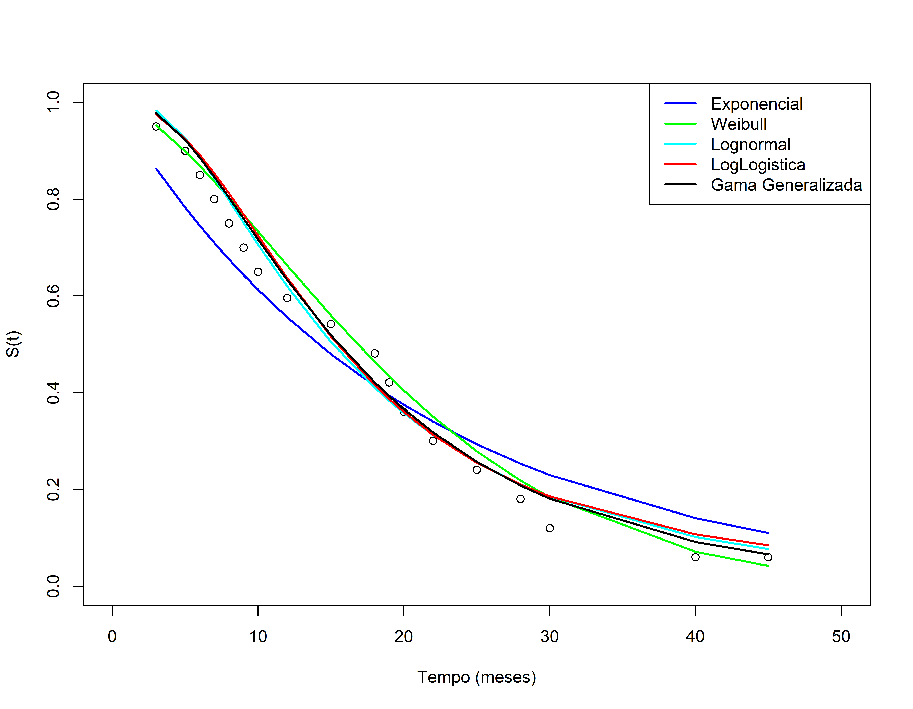

Análise de Sobrevivência
Modelos Paramétricos - Outros Modelos
Modelos Paramétricos
Neste exemplo são considerados os tempos de reincidência, em meses, de um grupo de 20 pacientes com cancer de bexiga que foram submetidos a um procedimento cirurgico feito por laser. Aqui vamos utilizar as funções existentes no pacote survival e flexsurv.
Para ajustar um modelo paramétrico usamos a função survreg.
Metodo de Kaplan-Meier
Biblioteca Flexsurv - Exponencial
library(flexsurv)
ajuste1 <- flexsurvreg(Surv(tempos,status)~1,data=dados, dist='exponential')
ajuste1#> Call:
#> flexsurvreg(formula = Surv(tempos, status) ~ 1, data = dados,
#> dist = "exponential")
#>
#> Estimates:
#> est L95% U95% se
#> rate 0.0490 0.0305 0.0788 0.0119
#>
#> N = 20, Events: 17, Censored: 3
#> Total time at risk: 347
#> Log-likelihood = -68.27389, df = 1
#> AIC = 138.5478Biblioteca Flexsurv - Weibull
ajuste2 <- flexsurvreg(Surv(tempos,status)~1,data=dados, dist='weibull')
ajuste2#> Call:
#> flexsurvreg(formula = Surv(tempos, status) ~ 1, data = dados,
#> dist = "weibull")
#>
#> Estimates:
#> est L95% U95% se
#> shape 1.543 1.066 2.235 0.291
#> scale 21.339 15.591 29.206 3.417
#>
#> N = 20, Events: 17, Censored: 3
#> Total time at risk: 347
#> Log-likelihood = -66.13336, df = 2
#> AIC = 136.2667Biblioteca Flexsurv - Lognormal
ajuste3 <- flexsurvreg(Surv(tempos,status)~1,data=dados, dist='lognormal')
ajuste3#> Call:
#> flexsurvreg(formula = Surv(tempos, status) ~ 1, data = dados,
#> dist = "lognormal")
#>
#> Estimates:
#> est L95% U95% se
#> meanlog 2.717 2.372 3.063 0.176
#> sdlog 0.765 0.544 1.075 0.133
#>
#> N = 20, Events: 17, Censored: 3
#> Total time at risk: 347
#> Log-likelihood = -65.7399, df = 2
#> AIC = 135.4798Biblioteca Flexsurv - LogLogística
ajuste4 <- flexsurvreg(Surv(tempos,status)~1,data=dados, dist='llogis')
ajuste4#> Call:
#> flexsurvreg(formula = Surv(tempos, status) ~ 1, data = dados,
#> dist = "llogis")
#>
#> Estimates:
#> est L95% U95% se
#> shape 2.22 1.51 3.28 0.44
#> scale 15.45 10.85 21.98 2.78
#>
#> N = 20, Events: 17, Censored: 3
#> Total time at risk: 347
#> Log-likelihood = -66.03053, df = 2
#> AIC = 136.0611Biblioteca Flexsurv - Gama Generalizada
ajuste5 <- flexsurvreg(Surv(tempos,status)~1,data=dados, dist='gengamma')
ajuste5#> Call:
#> flexsurvreg(formula = Surv(tempos, status) ~ 1, data = dados,
#> dist = "gengamma")
#>
#> Estimates:
#> est L95% U95% se
#> mu 2.805 2.168 3.442 0.325
#> sigma 0.743 0.498 1.110 0.152
#> Q 0.247 -1.291 1.786 0.785
#>
#> N = 20, Events: 17, Censored: 3
#> Total time at risk: 347
#> Log-likelihood = -65.69074, df = 3
#> AIC = 137.3815Teste da Razão de Verossimilhança
modelos <- data.frame(modelos=c("exponencial", "Weibull", "lognormal", "gama generalizada"), logvero= c(ajuste1$loglik, ajuste2$loglik, ajuste3$loglik, ajuste5$loglik))
modelos#> modelos logvero
#> 1 exponencial -68.27389
#> 2 Weibull -66.13336
#> 3 lognormal -65.73990
#> 4 gama generalizada -65.69074## Teste da Razão de verossimilhança
## Só é possível de se usar em modelos encaixados
## O modelo log-logístico não é encaixado no gama-generalizado
# Exponencial H0: q=σ=1 H1:diferente de 1
TRVe <- 2*(ajuste5$loglik - ajuste1$loglik)
# Weibull H0: q = 1 H1: diferente de 1
TRVw <- 2*(ajuste5$loglik - ajuste2$loglik)
# Lognormal H0: q = 0 H1: diferente de 0
TRVlog <- 2*(ajuste5$loglik - ajuste3$loglik)
TRV_modelos <- data.frame(modelos=c("exponencial", "Weibull", "lognormal"), TRV= c(TRVe, TRVw, TRVlog), quiquadrado=c(pchisq(TRVe,2, lower.tail = F),pchisq(TRVw,1, lower.tail = F),pchisq(TRVlog,1, lower.tail = F)))
TRV_modelos#> modelos TRV quiquadrado
#> 1 exponencial 5.16630281 0.07553559
#> 2 Weibull 0.88523500 0.34677185
#> 3 lognormal 0.09831756 0.75385805Comparando através do AIC
aic.exp <- -2*ajuste1$loglik + 2*1
aic.wei <- -2*ajuste2$loglik + 2*2
aic.ln <- -2*ajuste3$loglik + 2*2
aic.ll <- -2*ajuste4$loglik + 2*2
aic.gg <- -2*ajuste5$loglik + 2*3
aic <- c(aic.exp, aic.wei, aic.ln, aic.ll, aic.gg)
delta.aic <- aic - min(aic)
delta.aic#> [1] 3.0679853 0.7869174 0.0000000 0.5812562 1.9016824peso.aic <- exp(-0.5*delta.aic)/sum(exp(-0.5*delta.aic))
#sum(peso.aic)
aic1 <- c(AIC(ajuste1),AIC(ajuste2),AIC(ajuste3),AIC(ajuste4),AIC(ajuste5))
aic#> [1] 138.5478 136.2667 135.4798 136.0611 137.3815aic1#> [1] 138.5478 136.2667 135.4798 136.0611 137.3815Peso de Akaike
modelos <- data.frame(modelos=c("Exponencial", "Weibull",
"Lognormal", "Loglogistico", "GG"),
p_Akaike = peso.aic)
modelos#> modelos p_Akaike
#> 1 Exponencial 0.0713062
#> 2 Weibull 0.2230770
#> 3 Lognormal 0.3306221
#> 4 Loglogistico 0.2472371
#> 5 GG 0.1277576Curvas de Sobrevivência
plot(tempost, st, ylim=range(c(0.0,1)), xlim=range(c(0,50)), ylab="S(t)", xlab="Tempo (meses)")
lines(ajuste1, col="blue", ci=FALSE)
lines(ajuste2, col="green", ci=FALSE)
lines(ajuste3, col="cyan", ci=FALSE)
lines(ajuste4,col="red", ci=FALSE)
lines(ajuste5,col="black", ci=FALSE)
legend("topright", lty=c(1,1,1,1), lwd=c(2,2,2,2),
col=c("blue", "green", "cyan","red", "black"),
c("Exponencial","Weibull", "Lognormal" , "LogLogistica", "Gama Generalizada"))